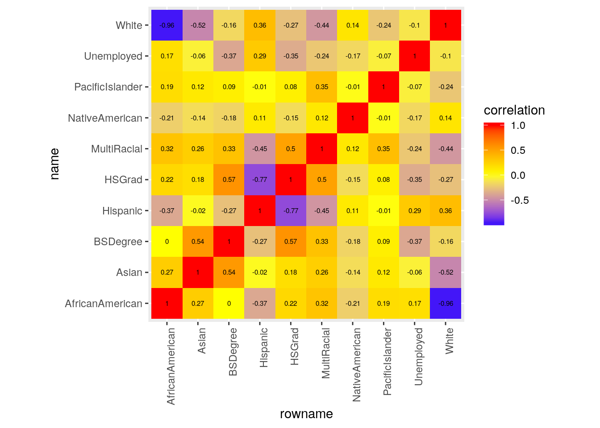
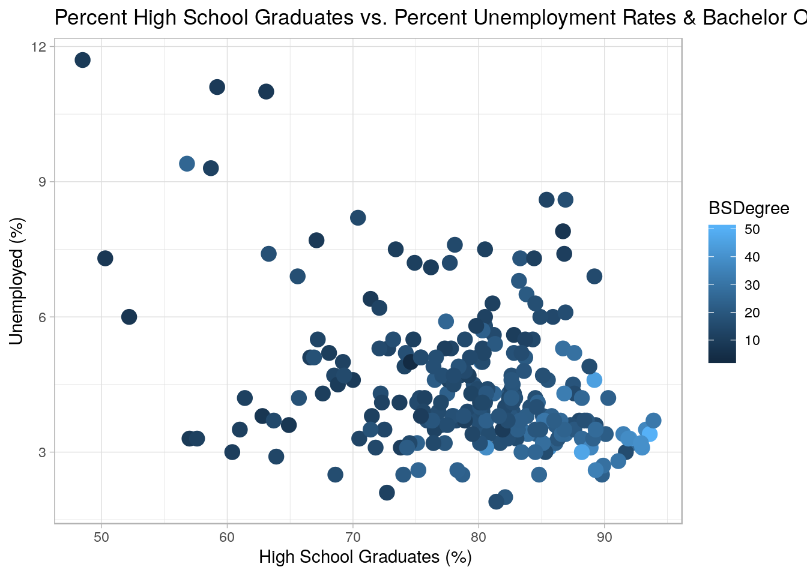
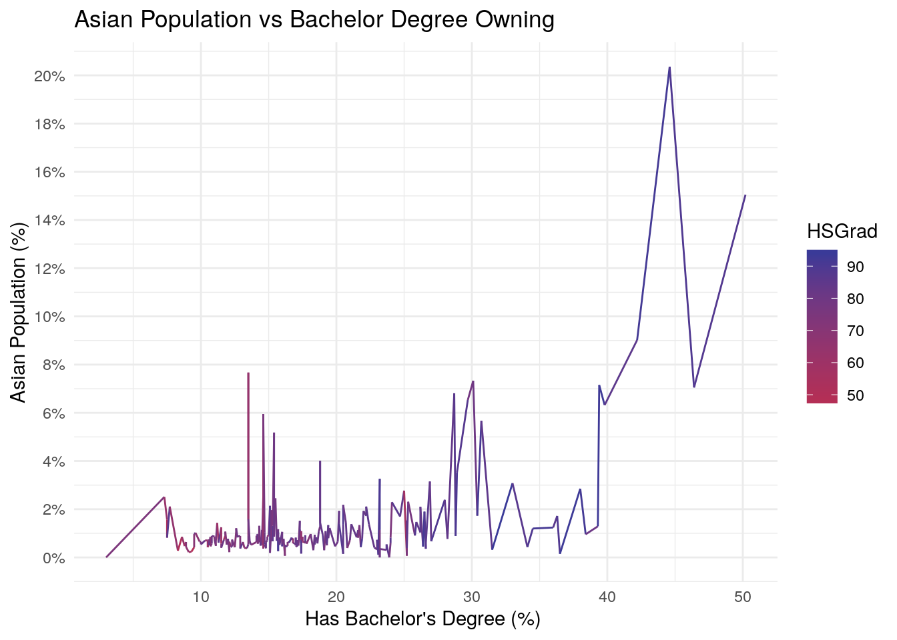
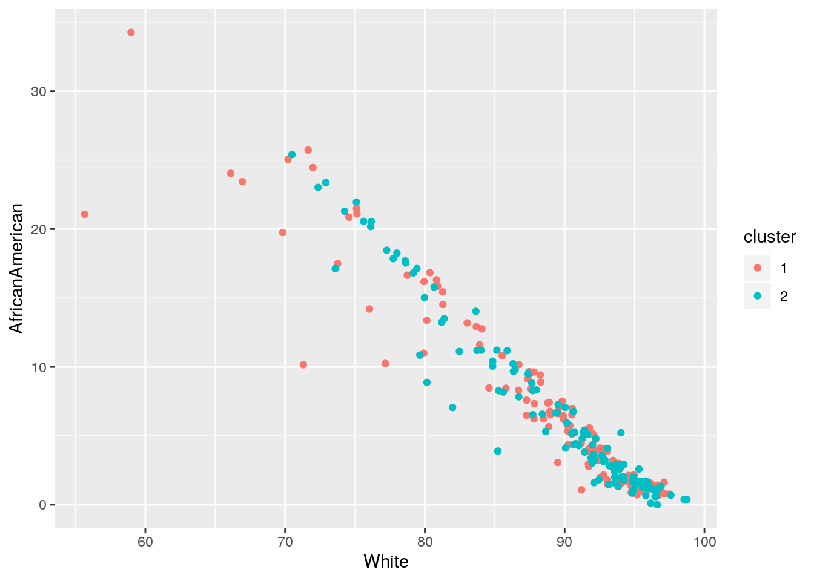
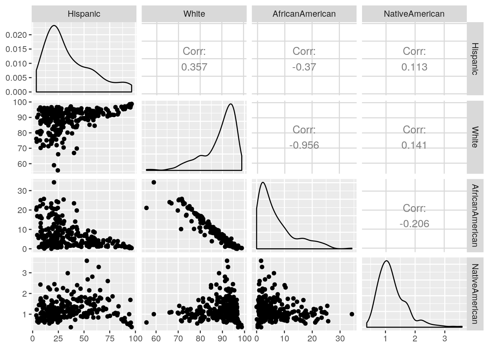
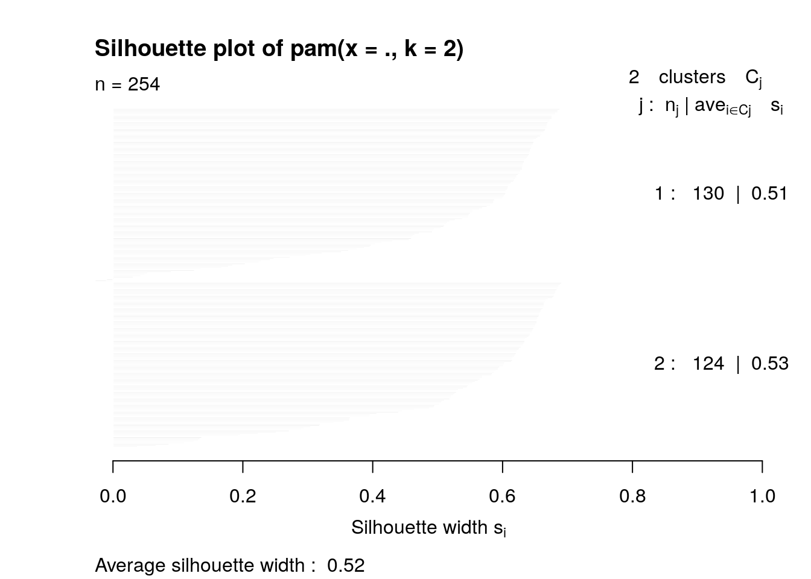

cntygrad <- read.csv("ResultsGrid_ExportData-2.csv")
cntyethnic <- read.csv("ResultsGrid_ExportData.csv")For this project, I decided to take a dataset on graduations and educations levels in all the counties across Texas and combine it with a dataset on the ethnic makeup of all the counties across Texas. The County Education dataset (labelled cntygrad) has the percentage of all the people in each county that graduated high school, completed their bachelors degree, or are unemployed. The county ethnicity dataset has variables for hispanic, white, African American, Native American, Asian, Pacific Islander, and mixed race. I am hoping to find an association with a particular ethnic group having a significantly larger amount of education in larger population counties. These two datasets were obtained from the Texas Associations of Counties website.
library(tidyr)
library(tidyverse)
cntygrad %>% pivot_longer(c("County"), names_to = "Type", values_to = "Counties") %>%
pivot_wider(names_from = "Type", values_from = "Counties")## # A tibble: 254 x 4
## X..High.School.Graduate.… X..Bachelor.s.Degree.or… Unemployment.Rate… County
## <dbl> <dbl> <dbl> <fct>
## 1 80.2 11.8 3.6 Anders…
## 2 73.8 10.6 3.1 Andrews
## 3 79.9 15.7 5.1 Angeli…
## 4 83.2 20.2 6.8 Aransas
## 5 90.1 21.8 3.4 Archer
## 6 89.8 23.1 2.5 Armstr…
## 7 75.3 14.3 4.2 Atasco…
## 8 82.4 21 4.3 Austin
## 9 67.6 10.7 4.3 Bailey
## 10 86.8 24 3.6 Bandera
## # … with 244 more rowsMy data was already tidy, so I untidied it by pivot_longer() and tidied it back up using pivot_wider().Pivot_longer() was selected on the County column, which then made a column named “Type” and each observation under it was named “County”. This doesn’t do much at all since my data was already tidy, so I switched it back using pivot_wider(), which got each name from the “Type” column and made it the name for the new column (which is the county column) and all of the values for that column come from the already existing Counties column.
cnty <- cntyethnic %>% left_join(cntygrad)I used a left_join() function to merge these two datasets together because both datasets have all of the exact counties in common with each other, so left joining would combine the same county variable but keep the rest of the other different variables in the new dataset. No cases were dropped or were needed to drop since all counties were accounted for in each observation in both datasets.
# Renaming my varibles via rename()
cnty <- cnty %>% rename(Hispanic = Ethnicity....Hispanic, White = Race....White.Alone,
AfricanAmerican = Race....African.American.Alone, NativeAmerican = Race....American.Indian...Alaska.Native.Alone,
Asian = Race....Asian.Alone, PacificIslander = Race....Native.Hawaiian.and.Other.Pacific.Islander.Alone,
MultiRacial = Race....Multi.Racial, HSGrad = X..High.School.Graduate.or.Higher,
BSDegree = X..Bachelor.s.Degree.or.Higher, Unemployed = Unemployment.Rate....)
## JUST AS A NOTE: Hispanic is an ethnicity and not a race,
## and thus do not factor into the percentage of races in each
## county. It is its own separate variable. The numbers under
## hispanic category represent the percentage of the total
## population that are hispanic in that county.
# Seeing which counties have large hispanic population and
# large percentage of people with Bach degree
cnty %>% filter(Hispanic >= 50 & BSDegree >= 20)## County Hispanic White AfricanAmerican NativeAmerican Asian PacificIslander
## 1 Bexar 60.31 84.59 8.47 1.23 3.15 0.22
## 2 Edwards 55.09 95.34 0.97 2.15 0.82 0.00
## 3 El Paso 82.81 91.98 3.94 1.04 1.34 0.22
## 4 Kleberg 72.89 90.64 4.37 0.89 2.31 0.18
## 5 Nueces 63.88 91.01 4.29 0.84 2.18 0.14
## 6 Presidio 83.59 93.15 1.47 1.38 2.77 0.01
## MultiRacial HSGrad BSDegree Unemployed
## 1 2.34 83.4 26.9 3.5
## 2 0.72 75.1 24.0 3.2
## 3 1.48 76.5 21.7 4.6
## 4 1.61 77.4 25.3 5.9
## 5 1.54 81.3 20.5 5.4
## 6 1.22 56.8 25.0 9.4# Seeing which counties have the highest percentage of
# unemployed.
cnty %>% arrange(desc(Unemployed)) %>% head()## County Hispanic White AfricanAmerican NativeAmerican Asian PacificIslander
## 1 Starr 96.32 98.75 0.38 0.38 0.24 0.02
## 2 Zavala 93.94 96.74 1.20 1.00 0.22 0.16
## 3 Willacy 88.26 95.32 2.59 0.65 0.85 0.06
## 4 Presidio 83.59 93.15 1.47 1.38 2.77 0.01
## 5 Maverick 95.12 96.47 0.59 1.69 0.74 0.03
## 6 Morris 9.96 72.36 23.02 1.29 0.61 0.11
## MultiRacial HSGrad BSDegree Unemployed
## 1 0.23 48.5 9.3 11.7
## 2 0.69 59.2 9.1 11.1
## 3 0.54 63.1 8.6 11.0
## 4 1.22 56.8 25.0 9.4
## 5 0.48 58.7 11.7 9.3
## 6 2.61 86.9 16.5 8.6# Removing all data about graduation, degree-owning, and
# unemployment in each county
cnty %>% select(-HSGrad) %>% select(-BSDegree) %>% select(-Unemployed)## County Hispanic White AfricanAmerican NativeAmerican Asian
## 1 Anderson 17.82 75.11 21.49 0.68 0.90
## 2 Andrews 56.19 94.22 1.94 1.47 0.75
## 3 Angelina 22.18 81.27 15.44 0.75 1.17
## 4 Aransas 27.66 93.05 1.79 1.24 1.93
## 5 Archer 8.68 95.58 1.03 1.42 0.43
## 6 Armstrong 7.50 96.43 1.12 1.49 0.11
## 7 Atascosa 64.47 95.65 1.18 1.23 0.63
## 8 Austin 27.14 87.51 9.50 0.82 0.72
## 9 Bailey 64.29 92.54 1.95 3.28 0.85
## 10 Bandera 18.80 95.51 0.99 1.25 0.61
## 11 Bastrop 37.84 87.28 7.58 1.96 0.94
## 12 Baylor 13.15 93.88 2.99 0.70 0.36
## PacificIslander MultiRacial
## 1 0.14 1.67
## 2 0.02 1.61
## 3 0.06 1.31
## 4 0.08 1.90
## 5 0.03 1.50
## 6 0.00 0.85
## 7 0.12 1.19
## 8 0.04 1.41
## 9 0.13 1.26
## 10 0.04 1.58
## 11 0.15 2.10
## 12 0.08 1.98
## [ reached getOption("max.print") -- omitted 242 rows ]# Seeing which counties have highest percentage of Asians.
cnty %>% arrange(desc(Asian)) %>% head()## County Hispanic White AfricanAmerican NativeAmerican Asian
## 1 Fort Bend 24.49 55.66 21.07 0.60 20.36
## 2 Collin 15.31 71.31 10.16 0.70 15.05
## 3 Denton 19.45 77.17 10.25 0.85 9.02
## 4 Moore 55.35 85.22 3.89 1.64 7.67
## 5 Harris 42.95 69.83 19.75 1.07 7.33
## 6 Williamson 24.52 81.98 7.05 0.86 7.15
## PacificIslander MultiRacial HSGrad BSDegree Unemployed
## 1 0.09 2.21 89.2 44.6 4.6
## 2 0.09 2.69 93.6 50.2 3.4
## 3 0.11 2.60 92.0 42.2 3.3
## 4 0.22 1.37 63.9 13.5 2.9
## 5 0.12 1.89 80.2 30.1 5.0
## 6 0.16 2.79 92.9 39.4 3.2# Total Percentage of Educated Population in each county
cnty %>% group_by(County) %>% summarize(totalEducated = HSGrad +
BSDegree)## # A tibble: 254 x 2
## County totalEducated
## <fct> <dbl>
## 1 Anderson 92
## 2 Andrews 84.4
## 3 Angelina 95.6
## 4 Aransas 103.
## 5 Archer 112.
## 6 Armstrong 113.
## 7 Atascosa 89.6
## 8 Austin 103.
## 9 Bailey 78.3
## 10 Bandera 111.
## # … with 244 more rows# Top Counties with Highest Graduation Rates
cnty %>% group_by(County) %>% top_n(5, HSGrad) %>% summarize(mean(HSGrad))## # A tibble: 254 x 2
## County `mean(HSGrad)`
## <fct> <dbl>
## 1 Anderson 80.2
## 2 Andrews 73.8
## 3 Angelina 79.9
## 4 Aransas 83.2
## 5 Archer 90.1
## 6 Armstrong 89.8
## 7 Atascosa 75.3
## 8 Austin 82.4
## 9 Bailey 67.6
## 10 Bandera 86.8
## # … with 244 more rows# Seeing average percentage of Asians in each county.
cnty %>% mutate(percentAsian = ntile(Asian, 100))## County Hispanic White AfricanAmerican NativeAmerican Asian
## 1 Anderson 17.82 75.11 21.49 0.68 0.90
## 2 Andrews 56.19 94.22 1.94 1.47 0.75
## 3 Angelina 22.18 81.27 15.44 0.75 1.17
## 4 Aransas 27.66 93.05 1.79 1.24 1.93
## 5 Archer 8.68 95.58 1.03 1.42 0.43
## 6 Armstrong 7.50 96.43 1.12 1.49 0.11
## 7 Atascosa 64.47 95.65 1.18 1.23 0.63
## 8 Austin 27.14 87.51 9.50 0.82 0.72
## PacificIslander MultiRacial HSGrad BSDegree Unemployed percentAsian
## 1 0.14 1.67 80.2 11.8 3.6 65
## 2 0.02 1.61 73.8 10.6 3.1 52
## 3 0.06 1.31 79.9 15.7 5.1 75
## 4 0.08 1.90 83.2 20.2 6.8 87
## 5 0.03 1.50 90.1 21.8 3.4 15
## 6 0.00 0.85 89.8 23.1 2.5 2
## 7 0.12 1.19 75.3 14.3 4.2 37
## 8 0.04 1.41 82.4 21.0 4.3 48
## [ reached getOption("max.print") -- omitted 246 rows ]# Average percentage of African Americans in the 254 Texas
# counties.
cnty %>% summarize(mean(AfricanAmerican, na.rm = T), n(), n_distinct(County))## mean(AfricanAmerican, na.rm = T) n() n_distinct(County)
## 1 6.820669 254 254# Average percentage of White people in the 254 Texas
# counties.
cnty %>% summarize(mean(White, na.rm = T), n(), n_distinct(County))## mean(White, na.rm = T) n() n_distinct(County)
## 1 88.91437 254 254# Average percentage of Asians in the 254 Texas counties.
cnty %>% summarize(mean(Asian, na.rm = T), n(), n_distinct(County))## mean(Asian, na.rm = T) n() n_distinct(County)
## 1 1.28378 254 254# Average percentage of Pacific Islanders and Hawaiians in
# the 254 Texas counties.
cnty %>% summarize(mean(PacificIslander, na.rm = T), n(), n_distinct(County))## mean(PacificIslander, na.rm = T) n() n_distinct(County)
## 1 0.09366142 254 254# Average percentage of Hispanic people in the 254 Texas
# counties.
cnty %>% summarize(mean(Hispanic, na.rm = T), n(), n_distinct(County))## mean(Hispanic, na.rm = T) n() n_distinct(County)
## 1 34.97055 254 254# Average percentage of Native Americans in the 254 Texas
# counties.
cnty %>% summarize(mean(NativeAmerican, na.rm = T), n(), n_distinct(County))## mean(NativeAmerican, na.rm = T) n() n_distinct(County)
## 1 1.225827 254 254# Average percentage of Mixed Race people in the 254 Texas
# counties.
cnty %>% summarize(mean(MultiRacial, na.rm = T), n(), n_distinct(County))## mean(MultiRacial, na.rm = T) n() n_distinct(County)
## 1 1.662165 254 254# Average Unemployement Percentage in All Texas Counties
cnty %>% summarize(`Average Unemployed` = mean(Unemployed, na.rm = T))## Average Unemployed
## 1 4.473622# Average High School Graduation Percentage in All Texas
# Counties
cnty %>% summarize(`Average HS Graduation` = mean(HSGrad, na.rm = T))## Average HS Graduation
## 1 79.46969# Average Bachelor Degree Owning Percentage in All Texas
# Counties
cnty %>% summarize(`Average Bachelor's` = mean(BSDegree, na.rm = T))## Average Bachelor's
## 1 18.25709# Biggest values for each category
cnty %>% summarize_if(is.numeric, list(min = min), na.rm = T)## Hispanic_min White_min AfricanAmerican_min NativeAmerican_min Asian_min
## 1 3.58 55.66 0 0.37 0
## PacificIslander_min MultiRacial_min HSGrad_min BSDegree_min Unemployed_min
## 1 0 0 48.5 3 1.9# Largest Values for each category
cnty %>% summarize_if(is.numeric, list(max = max), na.rm = T)## Hispanic_max White_max AfricanAmerican_max NativeAmerican_max Asian_max
## 1 96.32 98.75 34.26 3.58 20.36
## PacificIslander_max MultiRacial_max HSGrad_max BSDegree_max Unemployed_max
## 1 1.24 4.62 93.9 50.2 11.7Firstly, I renamed all of the variables in the joined dataset to have each name be shorter and easier to type using the rename() function, a type of select() dyplr function. I then filtered out all of the counties that had a high Hispanic population of over 50% and a high bachelor degree-owning population, and 6 counties showed up. I also looked at counties that had the highest percentages of unemployed individuals. I also looked at counties with both the highest high school graduation rates and highest bachelor degree ownership. In the next few lines of code, I looked at the average percentage of each individual ethnic and race group across all counties in Texas. The smallest percent living in all counties in Texas would be the Pacific Islander race. I then looked at all of the averages for unemployment, high school graduation, and bachelor-owning people across all Texas counties. A shocking detail from this was that the average unemployment rate is 4.47% across Texas, which is a lot smaller than I was expecting. I used the summarize() function for all of these commands. I then summarized each category using summarize_if() and found the maximum and minimum values for each variable. Although I don’t know in what particular county each of these max and min values are present in, it is interesting to know that the largest % unemployment in one of the Texas counties is 11.7% which is massive!
# Making correlation matrix from cnty dataset
library(ggplot2)
corcnty <- cnty %>% na.omit %>% select_if(is.numeric)
cor(corcnty)## Hispanic White AfricanAmerican NativeAmerican
## Hispanic 1.000000000 0.3570451 -0.370345341 0.11331044
## White 0.357045144 1.0000000 -0.956229190 0.14121286
## AfricanAmerican -0.370345341 -0.9562292 1.000000000 -0.20561275
## NativeAmerican 0.113310439 0.1412129 -0.205612748 1.00000000
## Asian -0.021443201 -0.5181196 0.270976926 -0.14335519
## PacificIslander -0.006184931 -0.2413808 0.189548458 -0.01384159
## MultiRacial -0.454464102 -0.4446747 0.321255296 0.12431262
## HSGrad -0.772068466 -0.2680471 0.216130370 -0.14658184
## BSDegree -0.266840832 -0.1636358 0.001071318 -0.18174314
## Unemployed 0.287153919 -0.1035830 0.173974739 -0.16578815
## Asian PacificIslander MultiRacial HSGrad
## Hispanic -0.02144320 -0.006184931 -0.4544641 -0.77206847
## White -0.51811962 -0.241380836 -0.4446747 -0.26804709
## AfricanAmerican 0.27097693 0.189548458 0.3212553 0.21613037
## NativeAmerican -0.14335519 -0.013841591 0.1243126 -0.14658184
## Asian 1.00000000 0.120771749 0.2601897 0.17814036
## PacificIslander 0.12077175 1.000000000 0.3541498 0.08017898
## MultiRacial 0.26018967 0.354149796 1.0000000 0.49793207
## HSGrad 0.17814036 0.080178980 0.4979321 1.00000000
## BSDegree 0.54268590 0.087064408 0.3304233 0.57324927
## Unemployed -0.05856834 -0.066693131 -0.2380846 -0.35447436
## BSDegree Unemployed
## Hispanic -0.266840832 0.28715392
## White -0.163635773 -0.10358298
## AfricanAmerican 0.001071318 0.17397474
## NativeAmerican -0.181743141 -0.16578815
## Asian 0.542685904 -0.05856834
## PacificIslander 0.087064408 -0.06669313
## MultiRacial 0.330423285 -0.23808457
## HSGrad 0.573249266 -0.35447436
## BSDegree 1.000000000 -0.37374059
## Unemployed -0.373740589 1.00000000# Making data tidy
tidycor <- cor(corcnty) %>% as.data.frame %>% rownames_to_column %>%
pivot_longer(-1, names_to = "name", values_to = "correlation")
view(tidycor)
# Making the matrix
tidycor %>% ggplot(aes(rowname, name, fill = correlation)) +
geom_tile() + scale_fill_gradient2(low = "blue", mid = "yellow",
high = "red") + geom_text(aes(label = round(correlation,
2)), color = "black", size = 2) + theme(axis.text.x = element_text(angle = 90,
hjust = 1)) + coord_fixed()
# I referenced the sample codes from lecture for the code
# above to make the matrix!^# First plot
ggplot(data = cnty, aes(x = HSGrad, y = Unemployed, color = BSDegree),
stat = "summary") + geom_point(size = 4) + theme_light() +
ggtitle("Percent High School Graduates vs. Percent Unemployment Rates & Bachelor Owning People") +
ylab("Unemployed (%)") + xlab("High School Graduates (%) ")
# Second Plot
cnty %>% ggplot(aes(BSDegree, Asian, color = HSGrad)) + geom_line() +
scale_color_gradient2(low = "blue", mid = "red", midpoint = 6) +
scale_y_continuous(breaks = seq(0, 20, 2), labels = c("0%",
"2%", "4%", "6%", "8%", "10%", "12%", "14%", "16%", "18%",
"20%")) + ggtitle("Asian Population vs Bachelor Degree Owning") +
ylab("Asian Population (%)") + xlab("Has Bachelor's Degree (%) ") +
theme_minimal() For the first plot that’s comparing the percentage of high school graduates to the percent of unemployed individuals and people with a bachelor’s degree in each county, the general trend seems to be that the more high school graduates there are in a particular county, the less unemployed people there are and the more people that completed college there are. Basically, more high school graduates and college-goers tend to contribute to a lower unemployment rate in Texas counties!
The second plot shows the relationship between the percentage of people who owns a bachelor’s degree to the percentage of Asians in a particular county as well as the percentage of high school graduates in that same particular area. The observable trend is that the higher percentage of people who have bachelor degrees in a particular county positively correlates to a higher percentage of Asians as well as a higher percentage of high school graduates.
# Processing Data and Choosing Cluster
library(cluster)
pam1 <- cnty %>% select(-County) %>% select(-HSGrad) %>% select(-BSDegree) %>%
select(-Unemployed)
pam1## Hispanic White AfricanAmerican NativeAmerican Asian PacificIslander
## 1 17.82 75.11 21.49 0.68 0.90 0.14
## 2 56.19 94.22 1.94 1.47 0.75 0.02
## 3 22.18 81.27 15.44 0.75 1.17 0.06
## 4 27.66 93.05 1.79 1.24 1.93 0.08
## 5 8.68 95.58 1.03 1.42 0.43 0.03
## 6 7.50 96.43 1.12 1.49 0.11 0.00
## 7 64.47 95.65 1.18 1.23 0.63 0.12
## 8 27.14 87.51 9.50 0.82 0.72 0.04
## 9 64.29 92.54 1.95 3.28 0.85 0.13
## 10 18.80 95.51 0.99 1.25 0.61 0.04
## 11 37.84 87.28 7.58 1.96 0.94 0.15
## 12 13.15 93.88 2.99 0.70 0.36 0.08
## 13 59.08 88.30 8.89 0.84 0.64 0.11
## 14 24.81 66.11 24.04 1.08 3.26 0.89
## MultiRacial
## 1 1.67
## 2 1.61
## 3 1.31
## 4 1.90
## 5 1.50
## 6 0.85
## 7 1.19
## 8 1.41
## 9 1.26
## 10 1.58
## 11 2.10
## 12 1.98
## 13 1.22
## 14 4.62
## [ reached getOption("max.print") -- omitted 240 rows ]pam1 <- cnty %>% pam(2)
pam1## Medoids:
## ID County Hispanic White AfricanAmerican NativeAmerican Asian
## [1,] 63 63 29.56 88.86 5.66 2.26 1.31
## [2,] 200 200 34.33 93.68 2.56 1.58 0.97
## PacificIslander MultiRacial HSGrad BSDegree Unemployed
## [1,] 0.09 1.81 78.5 14.3 4.7
## [2,] 0.05 1.16 78.8 18.1 3.8
## Clustering vector:
## [1] 1 1 1 1 1 1 1 1 1 1 1 1 1 1 1 1 1 1 1 1 1 1 1 1 1 1 1 1 1 1 1 1 1 1 1 1 1
## [38] 1 1 1 1 1 1 1 1 1 1 1 1 1 1 1 1 1 1 1 1 1 1 1 1 1 1 1 1 1 1 1 1 1 1 1 1 1
## [75] 1 1 1 1 1 1 1 1 1 1 1 1 1 1 1 1 1 1 1 1 1 1 1 1 1 1
## [ reached getOption("max.print") -- omitted 154 entries ]
## Objective function:
## build swap
## 50.63990 43.31635
##
## Available components:
## [1] "medoids" "id.med" "clustering" "objective" "isolation"
## [6] "clusinfo" "silinfo" "diss" "call" "data"final <- cnty %>% mutate(cluster = as.factor(pam1$clustering))
final_cnty <- final %>% group_by(County) %>% count(cluster) %>%
arrange(desc(n)) %>% pivot_wider(names_from = "cluster",
values_from = "n", values_fill = list(n = 0))
# Visualizing White and African variables in clusters based
# on 2 variables
library(ggplot2)
ggplot(final, aes(x = White, y = AfricanAmerican, color = cluster)) +
geom_point()
# Visualizing All 4 Variables Againsts One Another
library(GGally)
final_cnty <- final %>% select(-County)
ggpairs(final_cnty, columns = 1:4)
# Average silhouette width
plot(pam1, which = 2)
# I referenced the sample codes from lecture for some of the
# code lines above^After performing PAM clustering on 7 variables for race above. I used the silhouette width to determine the appropriate amount of clusters with PAM. The resulting amount of clusters was 2. When visualizing the white populations against the African American populationin a cluster of 2 variables, there looks to be very little variation between these two variables as all the clusters are all going in one direction. I then tried comparing four variables (White, African American, Asian, and Native American) against one another and saw the largest negative correlation between the White and African American populations and the largest positive correlation between the White and Hispanic populations. The weakest correlation was between the Native American and Hispanic population. I then did an average silhouette width analysis to see if any of my pam clusters are significant. The resulting graph shows that both of my clusters are reasonable, but not strong enough to make a hard conclusion.
Note that the echo = FALSE parameter was added to the code chunk to prevent printing of the R code that generated the plot.